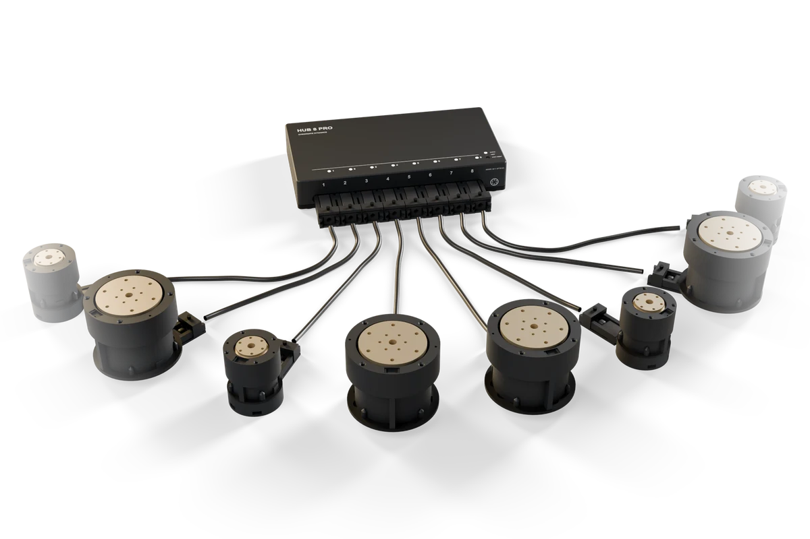

Built as nodes. Measured like instruments.
Motor, sensing and sync nodes on one USB-C bus. Makers use them one at a time, robotics companies build them in, and our data-station hardware is assembled from them.


Fig. 01 — Three motor nodes and the hub, as listed below. Concept renders.
Everything we make, in one list.
Prices are planned list prices. Nothing is on sale yet; registered interest decides what ships first.
The same parts, sold three ways.
Build your own robot
Complete motor nodes that set up in a browser and script from Python. Planned prices. Register your interest.
Register interest 02 Robot data floorsRun better stations
Sync QA on every episode, a motorized leader arm, commissioning and service plans.
Book a call 03 Robotics companiesBuild us into yours
Nodes, hub, depth and sync modules supplied with per‑unit test records and engineering support.
Talk to usOne cable per device.
Each node’s own USB-C port is the bus: power negotiated over PD, USB to a computer, and CAN to everything else. On a bench, a phone charger runs one node. On a floor, a Hub 8 Pro runs eight.
Fig. 02 — Bus topology. Hub 8 Pro ports are point-to-point segments, so a damaged cable is cut off without stopping the others.
Every unit ships with its own numbers.
Each node is calibrated and measured at final test, and the results go in the box and stay on the node. We publish measured values. Anything we haven’t measured yet is marked as a target.
- Encoder calibration stored on the node, not in a laptop’s config file
- Backlash, backdrive and torque recorded per serial number
- The same record goes to makers, OEM customers and our own stations
Our station hardware is made of this catalog.
A floor’s spare part is a node from the index above, and a repair is a swap. Each system below is a list of catalog numbers plus a little structure.

D1 · Hub 8 ProA2.5 · G-5208 · 25:1A2.3 · G-2804 · 20:1Nothing ships yet. Tell us what you’re building.
Makers register interest. Data floors book a call. Robotics companies talk to engineering.